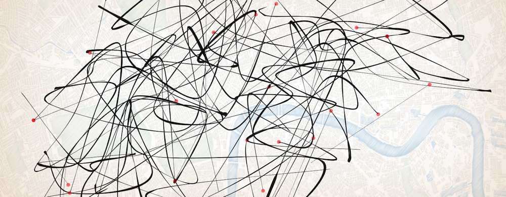

The idea of this project is to create some visually interesting artwork that is influenced by some data you have found on the web. This may be any data source ranging from text to images to statistical data. You can use some of the techniques covered in the Data Visualization session to help you assemble and process the data you wish to use.
Information art - as the name suggests - is art produced by taking information and turning it into art. The artistic work often does not resemble the information from which it was derived and is simply used as (sometimes arbitrary) input to form of the artwork.
During the first week of the BootCamp, we introduced encoding the letters that make up words as colours as a form of art, pointing out that to a computer, it's all numbers anyway. Data is easy to find on the web. You might use texts from Project Gutenberg (book text), the or the content of a URL to produce some art.
How you approach this is up to you, but the following might help you to get started. You can use arrays, loadStrings(), split() and for loops to turn the data you have found into variables you can process in your Processing sketches.
How you choose to represent data visually is up to you and you are encouraged to experiment, but here are some suggestions to get you thinking:
getCharAt() method: e.g. println("Hello world".getCharAt(0)); will
display the ASCII code number of the first character of the String Hello world.
